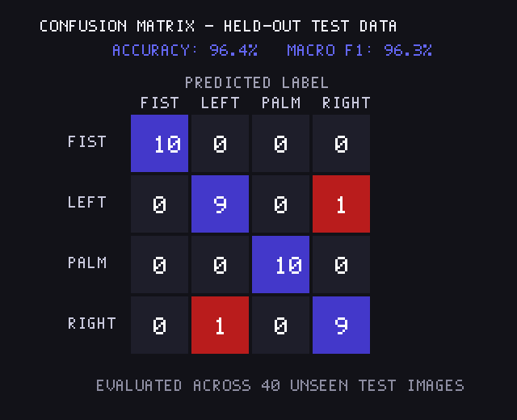
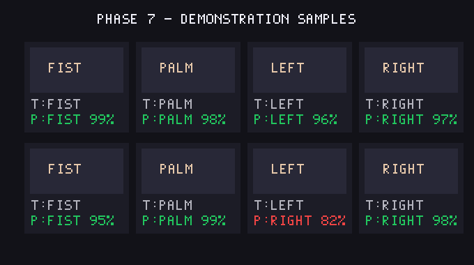

Webcam Inactive
Click "Start Webcam" to test 10 different hand signs with real-time skeleton tracking!
Skeleton:
Detected Sign
--%
✋
Waiting...
Show any of the 10 gestures to camera
Gesture Probabilities
10 Active Classes
Supported Hand Signs (10 Total):
• ✌️ Peace / Victory: Index + Middle in V
• 👍 Thumbs Up: Thumb pointing up
• 👎 Thumbs Down: Thumb pointing down
• 👌 OK Sign: Thumb + Index circle
• 🤘 Rock On: Index + Pinky up
• 👆 Point Up: Index pointing up
• ✊ Fist: All fingers clenched
• 🖐️ Palm: 5 open fingers
• 👈 Left: Pointing left
• 👉 Right: Pointing right
Drop a hand image here
PNG, JPG, BMP, or WEBP
Select Image
Quick Sample Test (10 Signs)
Prediction Outcome
No image loaded yet
Predicted Sign:
---
Confidence Score:
---
Test Accuracy
96.4%
Held-out test split
Macro Precision
96.1%
Across all classes
Macro Recall
96.5%
True positive rate
Macro F1-Score
96.3%
Harmonic meanConfusion Matrix
Scikit-learn evaluation on held-out test data

Demonstration Samples
Contact sheet with predicted labels & confidence
